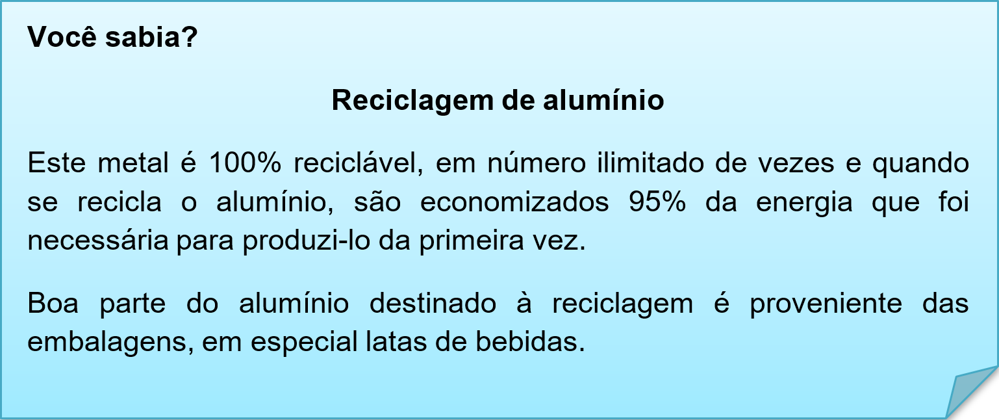
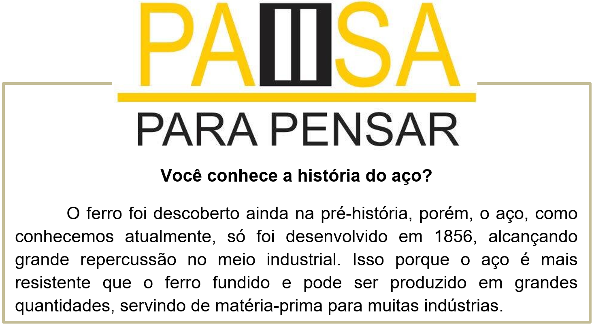
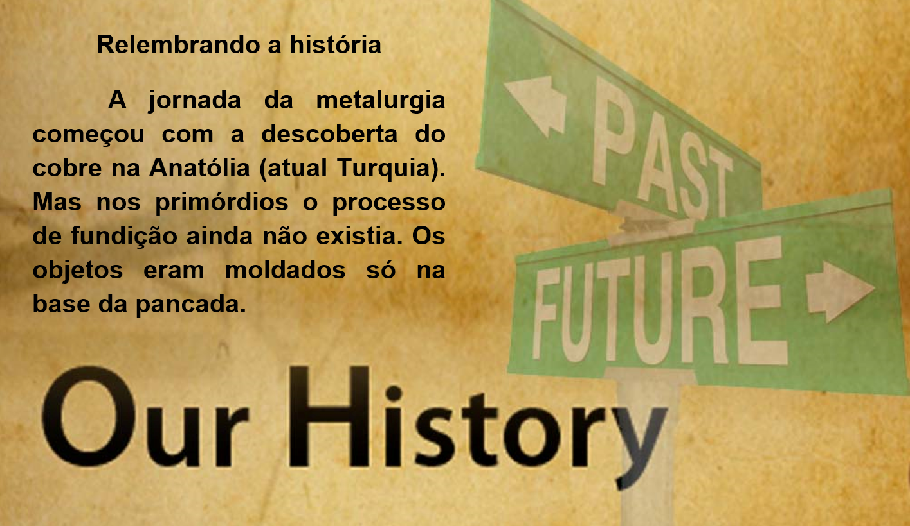
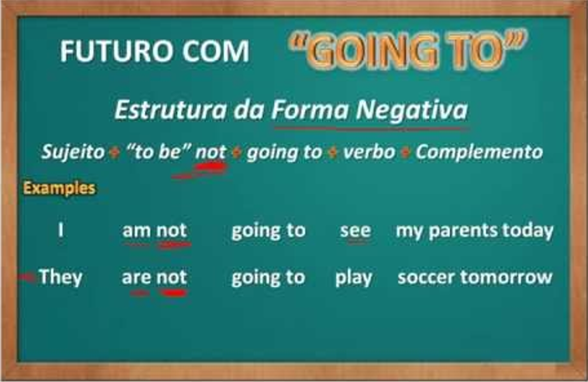

Capítulo 3: Metallurgy – Metalúrgica
What is the importance of metallurgy?
The Role of Metallurgy in Today's Society is very important. We live in a material world. Today, it is the role of the materials engineer to study, develop, design and operate processes that transform raw materials into useful engineering products intended to improve the quality of our lives.
Nesta unidade vamos expandir os conhecimentos na área de metalurgia. Vamos ver novos vocabulários, conhecer matérias primas entre outros. No texto acima, temos a importância dessa atividade para a sociedade atual, que necessita de todos esses materiais para ter uma boa qualidade de vida. Vamos a tradução desse trecho, para introduzir nosso vocabulário.
A função da metalurgia hoje na sociedade é muito importante. Nós vivemos em um mundo materialista. Hoje o estudo da engenharia de materiais, desenvolvimento, designer e o processo de operação são voltados para transformar materiais brutos em produtos úteis que melhoram nossa qualidade de vida.

Contextualizando – vocabulário metalúrgico
Na tabela abaixo temos uma lista de materiais que são utilizados nesse setor para fazer os produtos, no processamento ou para o acabamento.
charcoal > carvão vegetal
coal > carvão mineral
gas > gás
oil > petróleo
paraffin > parafina
petrol > gasolina
asbestos > amianto
ash > cinza
cardboard > cartão
chalk > giz
clay > barro
dust > pó
fibreglass > fibra de vidro
mud > lama
paper > papel
rubber > borracha
smoke > fumo
soil > terra
ice > gelo
steam > vapor
water > água

Nessa lista temos os elementos brutos que após o processo de metalurgia se transformam em objetos e produtos.
aluminium > alumínio
brass > bronze
bronze > bronze
copper > cobre
gold > ouro
iron > ferro
lead > chumbo
magnesium > magnésio
mercury > mercúrio
nickel > níquel
platinum > platina
silver > prata
steel > aço
tin > lata
uranium > urânio
zinc > zinco
alloy > liga
Assista ao vídeo e aprenda mais sobre metalurgia e seus processos.

Reconstruindo conhecimentos – Futuro contínuo – going to
Na unidade 1 aprendemos o futuro simples, que tem como uso ideias que ainda não temos certeza se vamos concretizar. Ele é definido como futuro incerto. Agora vamos estudar o futuro certo, conhecido como to be going to.
Ele tem uma estrutura mais complexa que o will, então atente-se!
Quando usar o going to?
O be going to é usado para falar do futuro em inglês. Nós utilizamos going to, frequentemente, para planos e intenções futuros.
Observe os seguintes exemplos:
1. I am going to sell my car.
- Eu vou vender meu carro.
Em algum momento o sujeito “eu” decidiu vender o carro em algum momento do futuro. Há a intenção de venda.
2. Anna is going to open her own business next month.
- Anna vai abrir o seu próprio negócio mês que vem.
Anna decidiu que abriria seu negócio próprio. Por isso, como existe um planejamento feito anteriormente, usamos a estrutura be going to.
3. What are your plans for vacations? – I’m going to travel with my family to Salvador.
- Quais são seus planos para as férias? – Eu vou viajar com a minha família para Salvador.
Regras do uso do going to
Em primeiro lugar, é importante saber que a estrutura de be going to é fixa. Consequentemente, deve-se atentar à conjugação do verbo to be que concorda com o sujeito da frase, seguido de:
Sujeito + verbo to be + going to + verbo principal, na sua forma-base:
1. He is going to see a movie.
- Ele vai ver um filme.
2. I’m going to France. em vez de I’m going to go to France.
Outros usos do going to
Além de planos ou intenções futuros estabelecidos previamente, pode-se utilizar be going to para predições futuras, sobretudo na presença de uma evidência.
1. Look at the clouds in the sky. It is going to rain.
- Olhe para as nuvens no céu. Vai chover.
2. It’s already 10 a.m. You’re going to miss the plane.
- Já são 10 da manhã. Você vai perder o avião.
Podemos usar o be going to, quando algo está próximo de acontecer:
3. Hey, be careful! You’re going to fall.
- Ei, cuidado! Você vai cair.
Aplicando ao nosso vocabulário metalúrgico
I am going to change aluminium in an pan. > Eu transformarei alumínio em uma panela.
I am going to do a metallurgy course. > Eu farei um curso de metalurgia.
We are going to metal for working. > Nós compraremos metal para trabalhar.
The solde ris going to work with silver. > O soldador trabalhará com prata.
O que aprendi
• Nesta unidade aprendemos o vocabulário do setor metalúrgico e a importância dessa indústria para a economia;
• Aprendemos os tipos de metais;
• Observamos as variações e a reciclagem do alumínio;
• Conhecemos a história e evolução da metalurgia;
• Na gramática aprendemos a utilizar uma nova estrutura de futuro.
Observe o quadro resumo do to be going to que vimos nessa unidade de estudos.
Praticando
Leia os objetos e diga em inglês de qual metal ele é feito.
Pans (panelas) > aluminium
Rings (anéis) >
Cans (latas) >
Windows (janelas) >
Coins (moedas) >
Leia esse trecho e responda em português:
The Nitric Acid Test is used to check if silver is pure or plated. To do so, file a small part of the item in a discreet area where it cannot be seen. Apply a few drops of nitric acid. If the area turns into creamy white, the silver is pure or sterling.
a. Qual metal é citado no texto?
b. Qual é a ideia central do texto?
Gramática: Usando os objetos do exercício faça, escreva o metal e o que será feito através dele.
Pans (panelas) > I am going to do pans with aluminium. Eu farei panelas com alumínio.
Rings (anéis) >
Cans (latas) >
Windows (janelas) >
Coins (moedas) >
Aplicando ao nosso conteúdo
• I need to buy metals for working. > Eu preciso comprar metais para trabalhar.
• I do rings with two tablets of the gold. > Eu faço alianças com duas barras de ouro.
• The solder produces metal windows. > O soldador produz janelas de metal.
Expandindo o conhecimento, em alguns texto falamos sobre o Reino Unido, Inglaterra e Grã Bretanha. Mas afinal qual a diferença? Assista ao vídeo e aprecie as informações:
O que aprendi
• Nessa unidade aprendemos o vocabulário sobre metalurgia e suas áreas;
• Aprendemos a classificar os substantivos quando a sua pluralização;
• Observamos a história da metalurgia;
Praticando
Leia o folder e destaque palavras cognatas, ou seja, palavras que são parecidas com o português na escrita e na tradução. Por exemplo a palavra METAL.
Na lista de metais, há vários que usamos no dia a dia. Elabore uma lista com metais e objetos que são feito com eles. Observe o exemplo.
• Aluminium – pans (panelas)
•
•
Seguindo as regras de plural dos substantivos, pluralize as palavras abaixo retiradas do folder do exercício 1.
• Solder > Solders
• Layer
• Ring
• Torch
• Jewerly